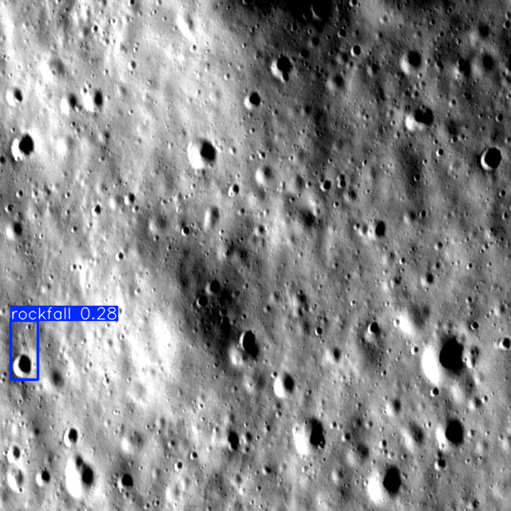
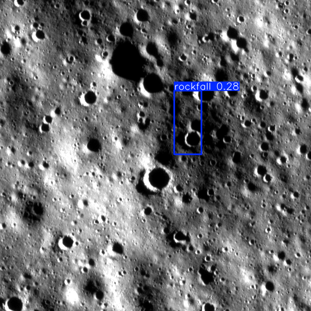
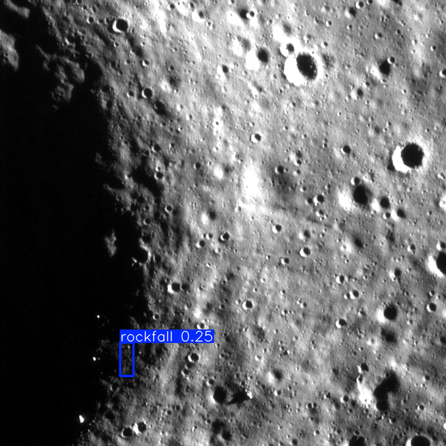
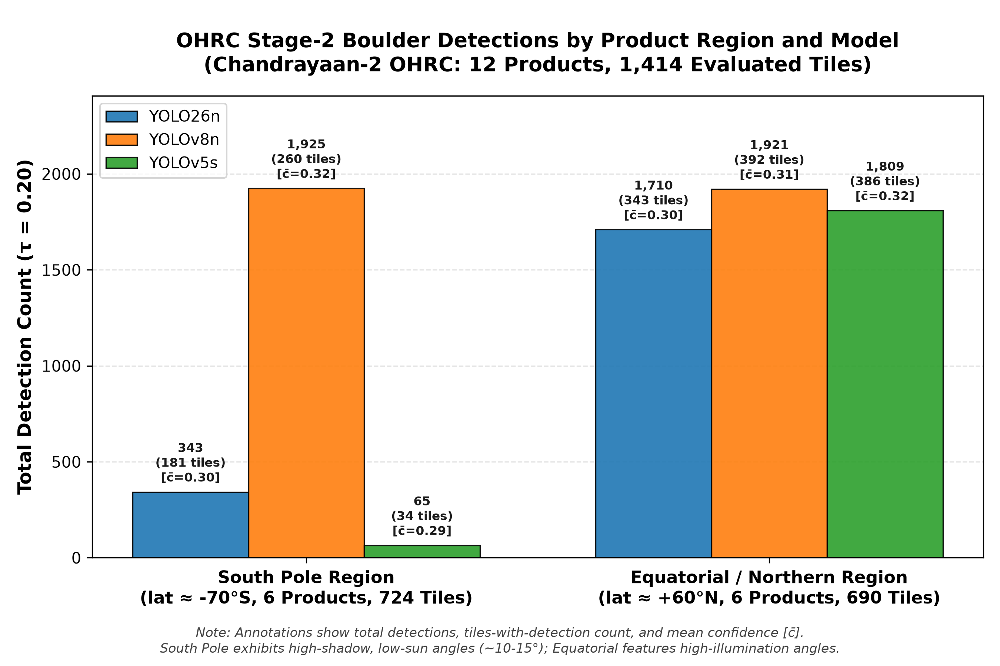

Detection Inspection
A domain-adaptive transfer learning pipeline transferring knowledge from labeled NASA LROC NAC source domain imagery to unlabeled Chandrayaan-2 OHRC target domain imagery via multi-reference histogram matching — without requiring any manual OHRC annotations.
| Model Architecture | mAP @ 0.5 | Precision | Recall | F1 Score | Architecture Type | Status |
|---|---|---|---|---|---|---|
|
YOLO26n
Champion
|
0.6400 | 0.6600 | 0.5900 | 0.6230 | Next-Gen Lightweight CNN | Validated |
|
YOLOv5s
Best Recall & F1
|
0.6490 | 0.6530 | 0.6070 | 0.6292 | Anchor-Based CNN | Validated |
|
YOLOv8n
Anchor-Free
|
0.5960 | 0.6200 | 0.5680 | 0.5929 | Anchor-Free CNN | Validated |
|
RT-DETR-L
Vision Transformer
|
0.4843 | 0.5483 | 0.5371 | 0.5426 | Real-Time DETR Transformer | Completed |
Benchmarking across both CNN (YOLO26n, YOLOv5s, YOLOv8n) and Vision Transformer (RT-DETR-L) architectures reveals a crucial physical finding for planetary remote sensing:

Prominent isolated boulder resting on polar regolith. Characterized by high albedo crest and razor-sharp cast shadow under low solar elevation (SI ~84°). Zero false-positive noise in surrounding tile.

Linear dispersion of multiple impact ejecta / rockfall fragments along a mass-wasting chute. Models demonstrate high detection density along the down-slope trajectory with tight spatial alignment.

Boulders perched on the steep upper rim crest of an impact crater. Detects rocks situated right at the boundary of extreme illumination and topographic shadow (σ=74.6), where seismic shaking dislodges debris.

Low solar elevation angles produce deep, elongated shadows. The high contrast between sunlit boulder rims and black shadow pockets provides unambiguous structural cues, yielding high mean confidence (0.288–0.314) and strong model consensus.
Steeper solar illumination reduces shadow extent, shifting the visual signature toward subtle regolith textural variations. YOLOv8n becomes highly sensitive to crater ripples and small mounds (81% tile hit rate), whereas YOLO26n remains disciplined and calibrated.
| Model | Recommended Threshold (τ) | Max F1 Score | Proxy Precision | Proxy Recall | Active Detections | Active Positive Tiles | Deployment Profile |
|---|---|---|---|---|---|---|---|
| YOLO26n | τ = 0.36 | 0.3981 | 71.39% | 27.60% | 402 | 172 | Precision Cataloging (Low FP) |
| YOLOv8n | τ = 0.26 | 0.3308 | 24.15% | 52.50% | 2,261 | 500 | Balanced Exploration |
| YOLOv5s | τ = 0.20 | 0.4674 | 36.34% | 65.48% | 1,874 | 420 | High-Recall Scouting (Candidate Harvest) |